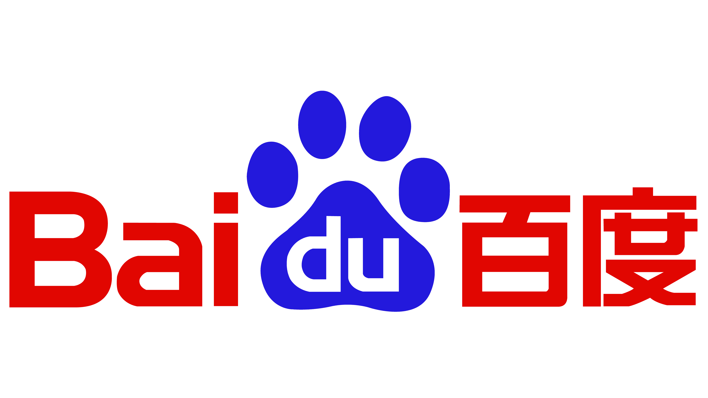
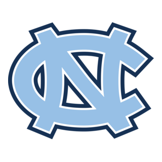

EMNLP 2026Oral
I study how LLM agents reason, disagree, and use evidence, so the systems built on them can be trusted.
I am a PhD candidate in Data Science at the University of Virginia, working in the RISE Lab with Prof. Sheng Li. My recent work asks when multimodal LLMs actually look at the image instead of following a text prior, how multi-agent systems should resolve disagreement, and how models behave when they refuse.
In summer 2026 I was an AI Engineering Intern at Capital One. I am also a part-time Research Lead at the AI4Finance Foundation, where I worked on FinRobot, an open-source AI agent for equity research. Before UVA, I studied statistics at Columbia University (M.A.) and at UNC-Chapel Hill (B.S., with economics).
- Multi-Agent Systems
- Trustworthy MLLM Reasoning
- AI for Finance & Education
News
Oct 2026
ItinBench is published in TMLR.
Sep 2026
New preprint on evidence use in whole-slide pathology VLMs is on arXiv.
Aug 2026
“You Shouldn't Have Asked” is accepted to the EMNLP 2026 main conference as an oral.
Jul 2026
One paper accepted at the ICML 2026 FoGen Workshop.
Jun 2026
Joined Capital One as an AI Engineering Intern for the summer.
Apr 2026
Passed my PhD qualifying exam.
Research
* equal contribution2026Preprint
TMLR 2026Journal
2026Preprint
2026Under review
Too Small to Tell: Auditing Sampled Decisions in Self-Evolving Agent Harnesses
ICML 2026FoGen Workshop
ICAIF 2024AI4F · Oral
Projects
Multi-agentUVA
AI Teaching Assistant
A multi-agent system over Canvas course documents for teaching and administrative work at the School of Data Science, with Prof. Prince Afriyie and Prof. Gianluca Guadagni.
Finance agentsAI4Finance
FinRobot & FinGPT
Open-source agent platform for financial analysis. I built the multi-agent chain-of-thought pipeline behind its equity research reports; FinRobot Pro reached the top 50 on GitHub trending.
Experience
2025-08 – nowCharlottesville, VA
RISE Lab, University of Virginia
PhD Research Assistant, with Prof. Sheng Li
Multi-agent frameworks, LLM reasoning, and vision agentic AI.
2026-06 – 2026-08McLean, VA
Capital One
AI Engineering Intern
2024-01 – nowRemote
AI4Finance Foundation
Research Lead (part-time), with Prof. Bruce Yang
Finance LLM development and evaluation on FinRobot and FinGPT, including a multi-layer debate algorithm with chain-of-thought prompting that produces full equity research reports.
2024-06 – 2024-08Teaneck, NJ
Agam Capital Management
AI Research Intern
Designed a RAG + MoE inference pipeline reaching 85% accuracy on automated code translation and Q&A generation.
2024-02 – 2024-08New York, NY
Department of Statistics, Columbia University
Research Assistant, with Prof. Arian Maleki
Neural network models for high-dimensional imaging data and noisy image recovery.
2024-02 – 2024-05New York, NY
Center on Global Energy Policy, Columbia University
Student Lead Research Assistant
ML models for optimizing carbon capture processes, and LLM tooling for automated literature review.
2023-05 – 2023-08Shenzhen, China

Baidu, NLP Lab
Research Intern
Fine-tuned ERNIE for legal document summarization, improving accuracy by 15% over internal benchmarks.
Education
2025 – nowCharlottesville, VA
University of Virginia
Ph.D. in Data Science
2024-12New York, NY
Columbia University
M.A. in Statistics, with honors
2023-05Chapel Hill, NC

University of North Carolina at Chapel Hill
B.S. in Statistics & Analytics and in Economics, with highest distinction
Service & Teaching
Reviewer
CVPR 2027 · ICLR 2027 · ICML 2026 · ACL 2025
Fall 2025UVA
DS 5030 Understanding Uncertainty
Teaching Assistant, with Jeffrey Woo
Spring 2023UNC
STOR 565 Machine Learning
Teaching Assistant, with Yufeng Liu
Music
original compositionsOutside the lab, I compose and produce music. It has more in common with research than I expected: you iterate, keep the happy accidents, and learn to hear when something finally clicks.
01Echoes On The Highway
02Not a Kid
03where to now?